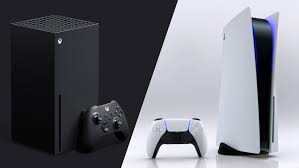
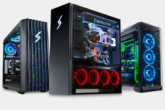
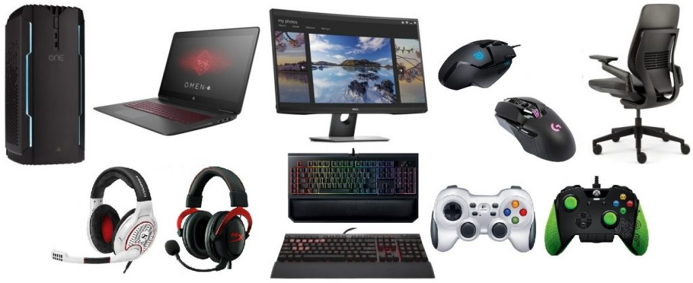

Let's Get Building
There are many types of consoles that sometimes we ask our selves on which one is the better one when you want to compete in gaming you want to go for either PlayStation or Xbox. Nintendo or Wii are gaming consoles that you can take on the go and play anywhere but these are only for people that are looking for more Story mode and Campaign games. When you choose either PlayStation or Xbox you get many advantages such as better frame rate which is really important in competitive gaming. You will also get better graphics for those campaign games. There are many types of players whether you are a FPS gamer or TPS gamer or even you just want to hang back and play Story mode games. The best console to buy for any gaming style is PlayStation or Xbox. They both have the same specs so you don’t have to worry about which console is better from those two. 
A gaming computer, also known as a gaming PC or gaming rig, is a personal computer designed for playing video games that require a high amount of computing power. A modern gaming computer is comparable to a mainstream computer with the addition of performance-oriented components, such as high-performance video cards and high core-count central processing units, that sacrifice power efficiency for raw performance. Gaming computers are often associated with enthusiast computing due to an overlap in interests; however, while a gaming computer is built to achieve performance for actual gameplay, enthusiast PCs are built to maximize performance, using games as a real application benchmark. Whereas enthusiast PCs are high-end by definition, gaming PCs can be subdivided into low-end, mid-range, and high-end markets. Video card manufacturers earn the bulk of their revenue from their low-end and mid-range offerings. Gaming PCs are often also suitable for other intensive tasks, like video editing.
Logitech G432 Gaming Headset. Razer Naga Pro Gaming Mouse. Samsung 49-Inch Curved Gaming Monitor. Razer Gigantus V2 Gaming Mouse Pad. Elgato Wave 1: Microphone for Streamers. HyperX Cloud Stinger Gaming Headset. Razer Nommo Chroma Speakers. Razer Viper Mini.
